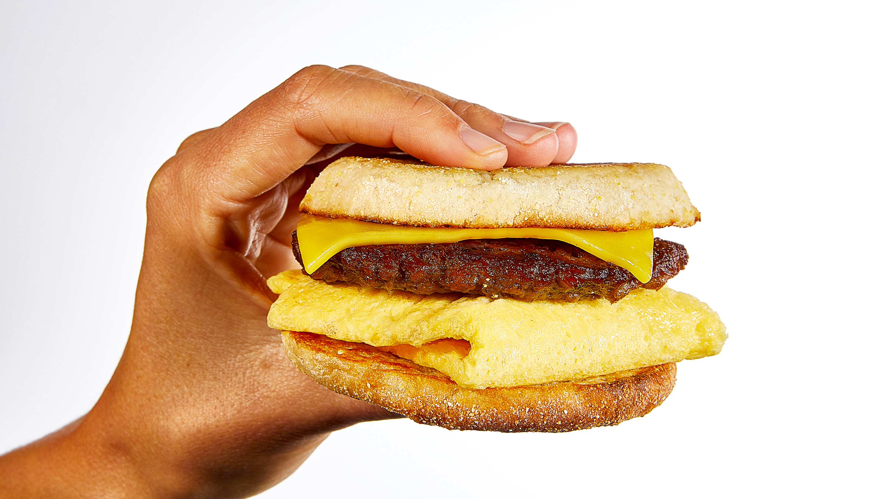

Vegan Breakfast Sandwich

Description
A really good vegan breakfast sandwich that you can make at home! No more spending $15 for a mid breakfast sandwich at your local hipster coffee shop. The ingredients are pretty easy to find too. You can use any of your favorite vegan-alternatives for this, but since there's a Whole Foods right next to where I live that's usually where I get my ingredients for these. I calculated the cost once for one of these and it's roughly $3 or so. I think these are better tasting too >:)
Ingredients
- Biscuits, english muffins, or bagels
- Beyond Breakfast Sausage Patty(I usually get the spicy ones)
- Just Egg Folded Eggs
- Favorite sliced non-dairy cheese (I really like the Whole Foods brand vegan cheese)
Steps
- Cook Beyond Sausage patty on stove until nice and brown.
- For best results, toast the Just Egg folded eggs in the toaster on the highest setting. Once it's done, I usually flip over the patty and toast it again on the highest setting. Really just depends on your toaster. Cooking it real well will make sure the insides are not cold or goopy.
- Lightly toast the bread that you plan to use for the sandwich.
- Time to add and melt the cheese. Turn on your oven to the broil setting. Either high or low. Place the bottom bread of the sandwich on an oven tray with the cheese of your choosing on top of it. Place tray in oven and consistently check on it to make sure that it doesn't overcook or boil basically. You just want the cheese to melt a little bit. Take it out of the oven when you reach the right amount of melty-ness.
- Assemble the sandwich! I go bottom bun, cheese, egg, sausage, top bun.
- Enjoy!
Homepage